An inclusive fitness app for individuals with different disabilities and creating a space for content creators to create and share accessible exercise classes.
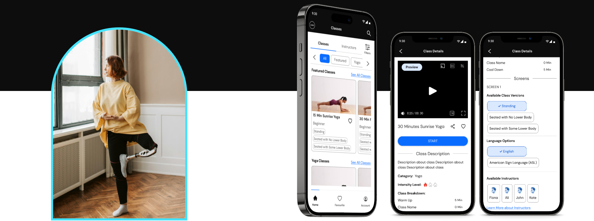
1. Overview
Sekond Skin Society is an inclusive fitness app where people with and without disabilities work out together. As lead designer I owned the end-to-end design of the first release — research, ideation, testing, and low through high fidelity. I also built the foundation of the design system, and the research behind it: the member survey, the interview guide for usability sessions, and the measures we used to tell whether it was working. It launched on iOS and Android in Summer 2025.
1.1. The challenge
Nearly half of adults with a disability get no exercise at all — 47.1%, against 26.1% of adults without one. That has a cost: inactive adults with a disability are 50% more likely to have a chronic disease than disabled adults who are active (CDC Vital Signs). In Canada, where the company is based, 8.0 million people aged 15 and over live with a disability. That is more than one in four (Canadian Survey on Disability, 2022).
That gap is about access, not motivation. When people told us what stopped them, it was the class itself:
The instructor’s voice is mixed into the music, so you cannot turn one down without the other
The movement is shown on screen, with nothing said out loud to describe it
The class assumes you are standing, so you have to invent your own version part-way through
And when an app does offer a seated or adapted version, it is an afterthought: a modification of the real class, rather than a class in its own right.
The challenge was to build an app where adapted classes are the product rather than a setting buried inside it, and where two people with different bodies can take the same class together.
1.2. The outcome
An accessible fitness app, live on iOS and Android.
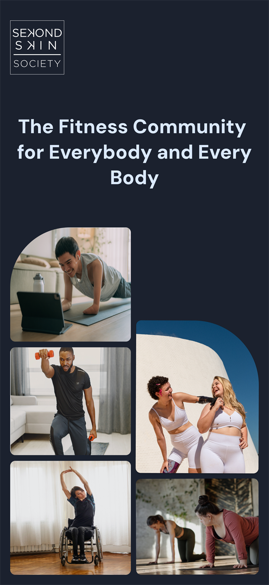
The community
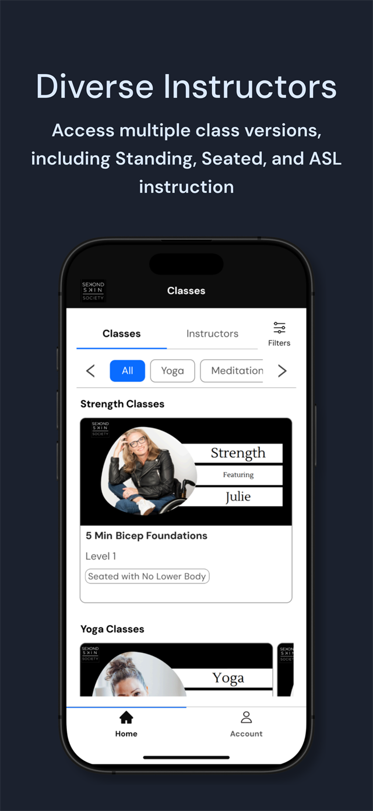
Class versions named up front
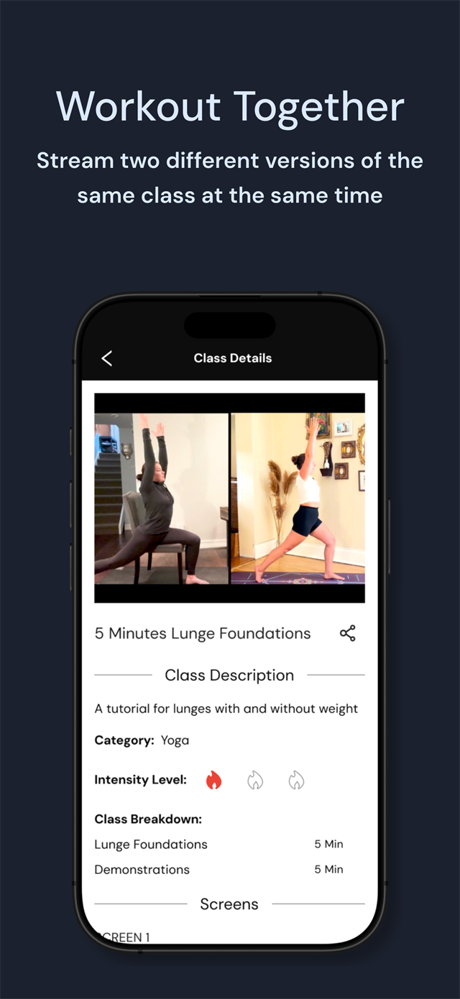
Two versions, one class
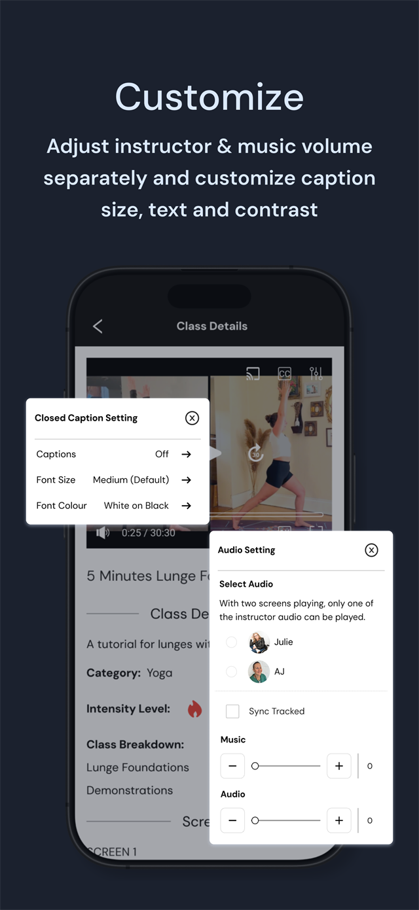
Separate audio and caption controls
Live now
Free to download on iPhone and Android
Two outside sources have checked the app since launch.
Verified by Apple8 of 8accessibility features Apple lists as supported, out of the eight it checks for: VoiceOver, Larger Text, Dark Interface, Differentiate Without Colour Alone, Sufficient Contrast, Reduced Motion, Captions and Audio Descriptions.Apple App Store listing
ShortlistedFinalist of threein the Product Design category of the Business Disability Forum's Disability Smart Impact Awards 2026, judged in London.Business Disability Forum
Vetted by screen reader users11 recommendationson AppleVis, the directory blind and low-vision users check to find out whether an app is actually usable before they download it.AppleVis listing
The AppleVis listing is the one that matters most to me. AppleVis is where blind and low vision users go to find out whether an app is genuinely usable before they download it, and the people reviewing there test with a screen reader. Being listed as fully accessible with VoiceOver is a direct check on what the app was built to do.
"The app is fully accessible with VoiceOver and is easy to navigate and use."
Sekond Skin Society's accessibility rating on AppleVis
My Role:
Lead Product Designer
Team:
Product Owner 4 Developers Content team CTO
Timeline:
Nov 2023 - Feb 2026
2. Initial Research
When I joined the team, I asked to review the research that had already been done. The most useful piece was a survey of the people the app was for, asking what they wanted from a workout and what got in the way. Their answers are what the three features in section 3 were built from.
2.1. Secondary research
The company had already researched the market. I built on that with my own secondary research into fitness and wellness apps more broadly: what already exists, where it stops working for disabled people, and which parts of a workout give way first. That is what the design had to answer to.
1.3Bpeople worldwide — 16% of the population — live with a significant disabilityWorld Health Organization
We set three target groups the app had to work for before it could launch. Each one needs something different from a class: to follow instruction you cannot hear, to follow movement you cannot see, or to do the movement with the body you have.
Designing for those three reaches further than three. Pain is the most common disability in the chart above, and limited flexibility is level with mobility just behind it. Neither is one of our three groups, but the class versions built for the mobility group — standing, seated, and seated without lower body — are what someone working around pain or a limited range of movement needs too. The member asking for modifications in section 3 was asking because of joint pain.
Deaf and hard of hearing
6%of Canadians aged 15 and over have a hearing disability
Instruction is carried by the instructor’s voice
Speech is mixed with music that cannot be separated from it
Captions, where they exist, are burned into the video
Blind and low vision
7%have a seeing disability
The workout is demonstrated visually, with no spoken equivalent
Controls assume you can see them and hit them precisely
Nothing describes what the instructor is doing
Low mobility
11%have a mobility disability
Movements assume a standing body
Modifications have to be invented part-way through a class
Seated versions, where they exist, are treated as a modification rather than a class of their own
Three features, each one traced from what members told us they needed through to what actually shipped.
01Low mobility
"I need to see options for modifications of some movements that I can't do due to joint pain."
Became
Adaptive class versions
Every class ships with standing, seated, and seated-without-lower-body variants built in, so nobody has to invent a modification part-way through a workout. Each card names its version and intensity up front, so the choice is made before the class starts rather than during it.
✓ Live: class cards display these version tags in both app stores
02Mixed-ability household
"Need to use an app with my husband who uses a wheelchair."
Became
Split screen
Two adapted versions of the same class play side by side, so two people with different bodies do the same workout together rather than separately.
✓ Live: the feature the company leads with on both store listings
03Deaf and hard of hearing
"Being able to control the volume of the background music without dimming/increasing the instructor's voice."
Became
Independent audio tracks, and captions the member controls
Separate volume for the instructor and the music, so you can turn the voice up without turning everything up. Every class also has captions and an American Sign Language version. Members set their own caption size and colour, and the levels are stepped buttons rather than sliders, so they do not need steady fine motor control.
✓ Live: Apple lists Captions and Audio Descriptions among this app's supported accessibility features
4. Design
4.1. Accessibility
Throughout the iterations, I ensured that the designs for the first release met stringent accessibility guidelines, including certain color contrast criteria, font sizes, and actionable components such as buttons, tabs, and fields, through continuous feedback from accessibility experts.
4.2. Iterations of the dashboard
The dashboard's purpose was to organize a list of available classes into categories. I tested it with several users to ensure that the browsing and filtering classes experience was easy to understand and follow.
User testing revealed that people prefer to select exercise classes led by instructors who share their experiences or needs (e.g., wheelchair accessibility). To cater to this, a list of instructors has been integrated into the dashboard, allowing users to explore classes and instructors in one place.
Before
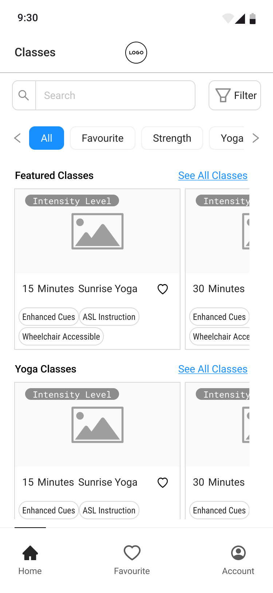
Dashboard
After - P1
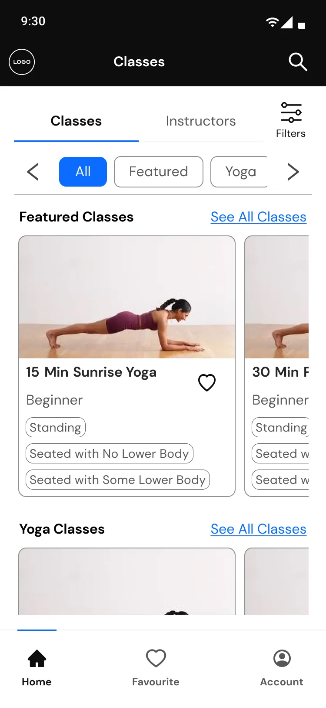
Dashboard - Classes
After - P2
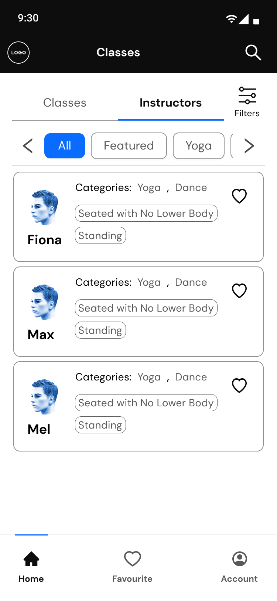
Dashboard - Instructors
4.3. Iterations of the class detail
A large portion of the time spent in this project was focused on designing and iterating the class details. A number of the iterations along the way are included here.
Before
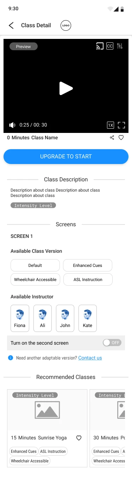
After
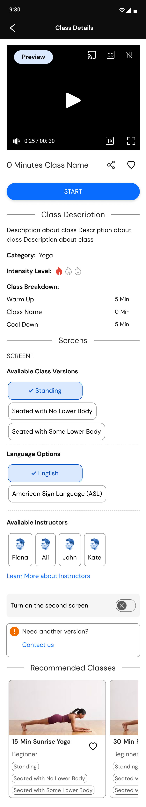
4.3.a. Change: class description
Users indicated that they needed more information for class descriptions. For instance, they liked to know the intensity of the classes and a breakdown of the class content. The breakdown would help them plan their warm-up and cool-down and equipment preprations accordingly.
"I would like to see clear details in the class description about how much time I need to spend on warm-up, the main workout, and cool-down."
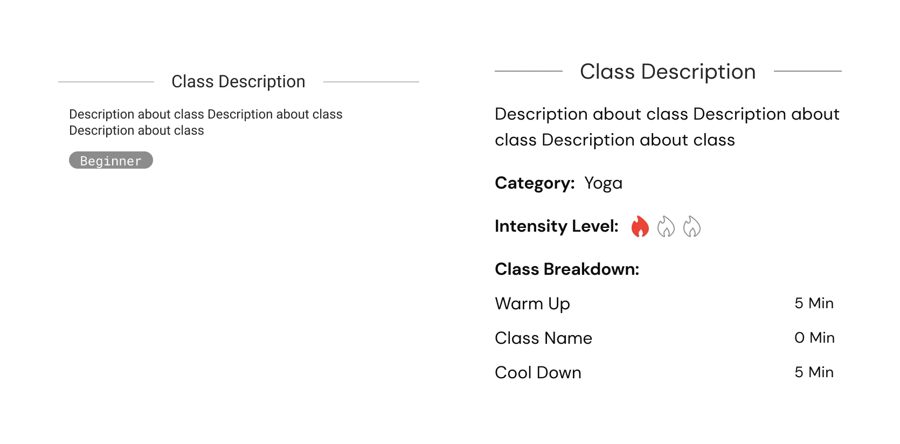
The new design (on the right) includes added components for intensity level, category, and class breakdown.
4.3.b. Change: terminology
Based on feedback from the content team, the terminology for intensity levels—previously labelled as beginner, intermediate, and difficult—has been replaced with icons and the designations level 1, level 2, and level 3 to make the vocabulary less imposing.
The class version terminology was updated and standardized. A separate section for languages was also introduced. Previously, American Sign Language (ASL) classes were grouped under class versions as well which had given rise to potentially conflicting options.
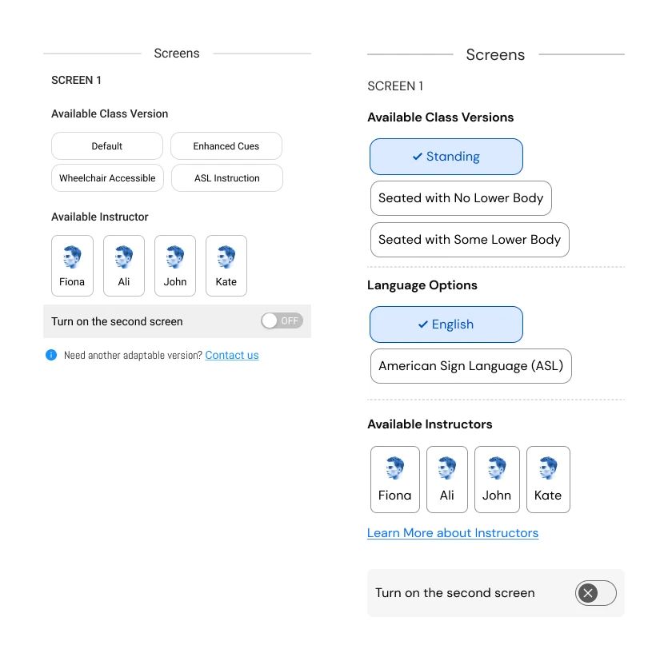
The new design shown on the right demonstrates the revised terminology for class versions and introduces a new category for language classifications.
4.4. Iterations of the split screen
A key feature of the app is its ability to display various adaptations of the same class. For instance, it enables a person with low vision to simultaneously participate in the same exercise as someone with limited lower body mobility.
Before
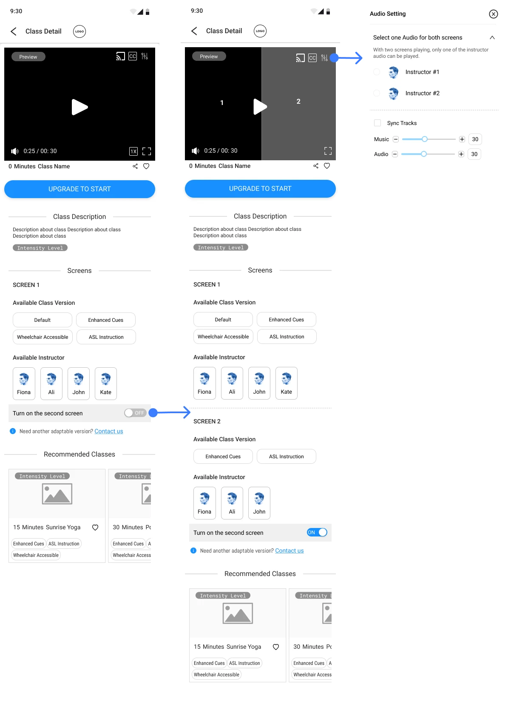
After
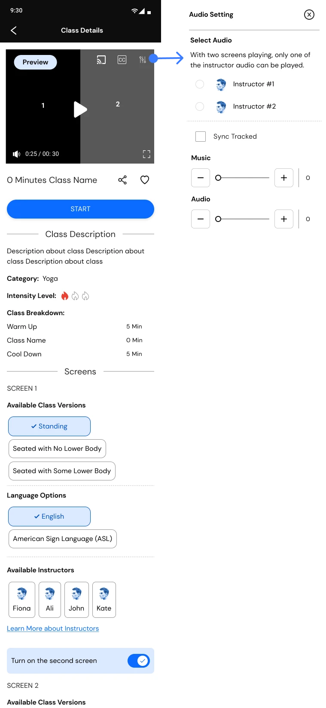
The image shows the initial iteration and the shipped version showing class details on split screens, showcasing two versions.
4.4.a. Change: audio settings
The design outlined below is for the audio settings that enables users to select their preferred audio track and customize the volume of both the instructor and the music. Previously, I had opted for sliders to control the audio. However, in the following iterations, in order to ensure ease of use for individuals with limited motor skills and low vision, I instead incorporated plus (+) and minus (-) tab buttons in the UI.
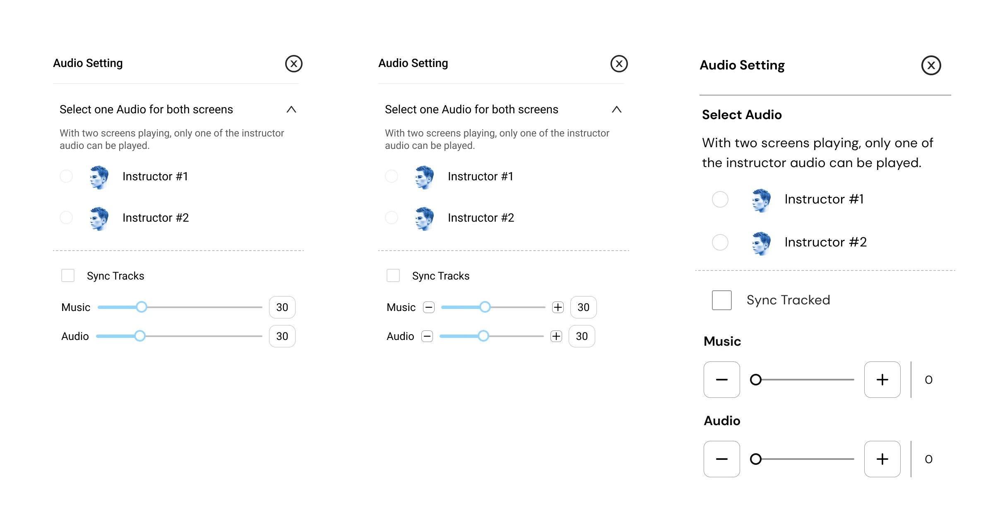
These are the iterations of the audio settings, with the most recent version displayed on the right.Text description of the three audio iterations
Three versions of the same Audio Setting panel, left to right.
First. Headed “Select one Audio for both screens”, with the note
“With two screens playing, only one of the instructor audio can be played.” Radio
buttons choose Instructor #1 or #2, a Sync Tracks checkbox sits below, and Music and Audio
each have a drag slider set to 30.
Second. The same panel, with small minus and plus buttons added at either end of
each slider, so a level can be nudged as well as dragged.
Third. The sliders are replaced by large square minus and plus buttons on either
side of a plain track, with the value shown to the right. Type is larger throughout and the
controls are spaced further apart. This is the version that shipped: a stepped control does not
require a drag held to a target, and each press is a single labelled action for a screen
reader.
4.5. What an outside review found
Once the app was live, an external accessibility reviewer went through it independently and came back with ten issues. This was the most useful feedback we got, because it covered what I could not check myself. I knew what the designs were meant to do, which made me the wrong person to notice where they did not.
Two of them we had already dealt with. The sliders being too small and too low-contrast to control is exactly what the stepped buttons in 4.4 were built to fix. And QA had already caught iOS not reading out the version tags, which are the Standing and ASL labels the whole approach depends on.
The rest were live, and they cluster into three kinds:
Things that were never designed. No dark mode, which the reviewer flagged for low vision and light sensitivity; text cut off across the app.
Things assistive technology could not reach. Carousels with no cue that they were carousels and invisible to low-vision tooling; a back gesture that failed inside the captions and audio menus, stranding screen reader users; playback controls that could not be dismissed once open.
Things that were designed but not well enough. Video controls without sufficient contrast; a default audio mix weighted wrongly between music and instructor; an unclear explanation of what the $1 subscription actually bought.
The finding that mattered most was about the feature the product is sold on:
It’s very unclear what a second screen is for or how it works.
External accessibility review of the live app
That is the split screen, and 4.4 above is the whole story of designing it. Getting the mechanics right — two versions, one audio track, stepped controls — turned out not to be the same as making it obvious what the feature was for. The next step I set was A/B testing alternatives rather than defending the design that existed.
5. Post-Launch Feedback
After launch we needed a way to tell whether the app was working. I worked on deciding the metrics: a baseline we could measure now, and keep measuring, so later versions could be compared against something rather than judged on impression.
5.1. Feedback collection
Feedback came in more than one way. The survey went to members, so the questions were the same for everyone and the answers could be counted. Follow-up interviews went further with the people who agreed to talk. And a lot of it arrived informally, in emails from members and in conversations they had directly with the founder.
Survey
Sent to members. The same questions for everyone, so the answers could be counted.
Interviews
Follow-up sessions with the members who said they were willing to talk.
Emails and conversations
Members writing in directly, and what they told the founder themselves.
The informal route mattered for timing. Anything that arrived outside the survey window would otherwise have been lost.
I kept all of it in one document rather than letting it sit in whoever’s inbox it landed in. From there I worked through the issues by how serious they were and how often they came up.
5.2. The survey
There was more worth asking about than members would answer, so the survey was built around the three that mattered most to the product: the content itself, the accessibility features, and the split screen — the feature the company leads with.
Content
Whether the classes themselves were understandable and worth returning to.
Accessibility features
Captions, audio settings, playback, and whether they were found and used at all.
Split screen
The feature the product is sold on, and the one least proven with real members.
Three sections, in the order a member could actually answer them:
Section 1 · 3 questions
Who is answering
Frequency of use, disability status, and which assistive technology they use.
Section 2 · 9 questions
How hard was it
Rating questions across the three focus areas.
Section 3
Willing to talk?
One question asking whether they would join a follow-up interview.
Asking who is answering first means the ratings can be read against the assistive technology that person actually uses.
Next to every score I added an optional box for people to explain the reason behind it, which gave better quality answers.
The survey went through three revisions before it was sent, reviewed by two colleagues and by an external senior researcher. The critique was about the survey itself rather than the app, and nearly all of it came down to the same thing: not making the person answering carry the cost of a badly written question.
How people are described. Widen the disability categories beyond the narrow set the draft offered, and say “mobility disability” rather than naming a wheelchair or assistive device. A wheelchair is equipment, not an identity.
The order of the questions. Follow the path a member actually takes through the app, move the assistive technology question to the start rather than two-thirds down, and label the sections so people know what they are about to be asked.
What the form asks of the respondent. Use conditional logic instead of telling people to skip questions that do not apply, and settle the scale direction rather than leaving it to convention.
The last two are not just tidying. Question order and conditional logic reduce the effort of answering, and a long, badly ordered form is hardest on exactly the people this app is for.
5.3. What the sessions were built to measure
Alongside the survey I wrote the guide for moderated sessions: five tasks covering signing up, browsing and filtering, playing a class and adjusting audio, using the split screen, and buying a membership. After each task, one question on how easy or difficult it was, then what was most confusing, and whether anything was missing that would have made it easier.
The plan changed depending on who I was sitting with. With Deaf and hard of hearing members I focused on captions, audio settings and the ASL classes. With blind and low vision members, on how the app behaves under the assistive technology they already use. Instructors ran the same tasks as members, because they use the product too. Five things were recorded each time:
Task completion — yes, no, or partially, because working around an interface is not the same as completing the task
Time on task
Errors
Ease, rated by the participant straight after the task rather than at the end of the session
Emotional response, kept separate from ease — a task can be easy and still feel patronising
5.4. Where this left the product
Building the collection system is where my work on the product ended. The responses came in after that, so I do not have the completion numbers and I cannot tell you where the ratings landed. What I can report is what the team took from it, which reached me second hand.
The thing members asked for most was not a new feature. They wanted a connection with their instructors, and to feel part of a community rather than following a video alone.
That ran into a problem design could not solve. We did not have many instructors who could teach the modified versions the app is built on: ASL classes, seated and adapted versions. So the focus of the startup shifted to instructors, and to training them.
6. Outcome
Where the product stood in December 2025, the first full reporting point after launch.
589app downloads since launch, at the end of FebruarySekond Skin Society, December 2025
68free trials started on iOS — Google does not report trial dataSekond Skin Society, December 2025
61paying membersSekond Skin Society, December 2025
The largest member demographic is people who are blind.
Membership breakdown · December 2025. Based on feedback sessions where members chose to disclose — the app collects no personal data.
That distribution is the part I am proudest of. If accessibility had been added to a general fitness app late, blind members would not have ended up as its largest group.
21reviews across the two app stores
11recommendations on AppleVis, the directory blind and low-vision users check before downloadingAppleVis listing
8 of 8accessibility features Apple lists as supported, out of the eight it checks forApple App Store listing
The app was also shortlisted as one of three finalists in the Product Design category of the Business Disability Forum’s Disability Smart Impact Awards 2026.
"The implementation of the music and voice is perfect. Having the option stepper control while also slider controls for balancing the audio and music is perfect… I also took a look at the captions and found these to be perfect as well. I was able to see them on my braille display while the speaker was speaking. This particular feature has only been available through Apple's TV Plus app and it's invaluable for people who need the feature."
Accessibility review · Blind Institute of Technology
Both of these come back to specific decisions. The stepped controls were chosen for people with limited fine motor control, and this review says they work for someone navigating by screen reader too. And captions only reach a braille display if they are real text rather than burned into the video. You only find that out when someone tests with hardware most teams never have in the room.
7. Learning Experience
Through this project I gained valuable experience designing with Agile development teams. I learned to involve developers from the beginning, to share Figma files with them continuously rather than at handover, and to take their input on what could be implemented quickly and lightly.
In one instance I had designed a page that would have been computationally taxing to run. Based on their feedback I rebuilt parts of it to be lighter, which showed me the value of asking for developer input several sprints before implementation rather than at the end.